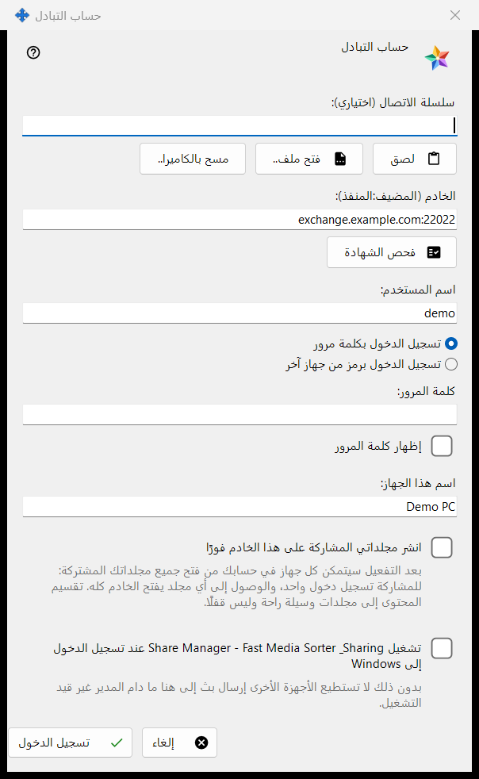
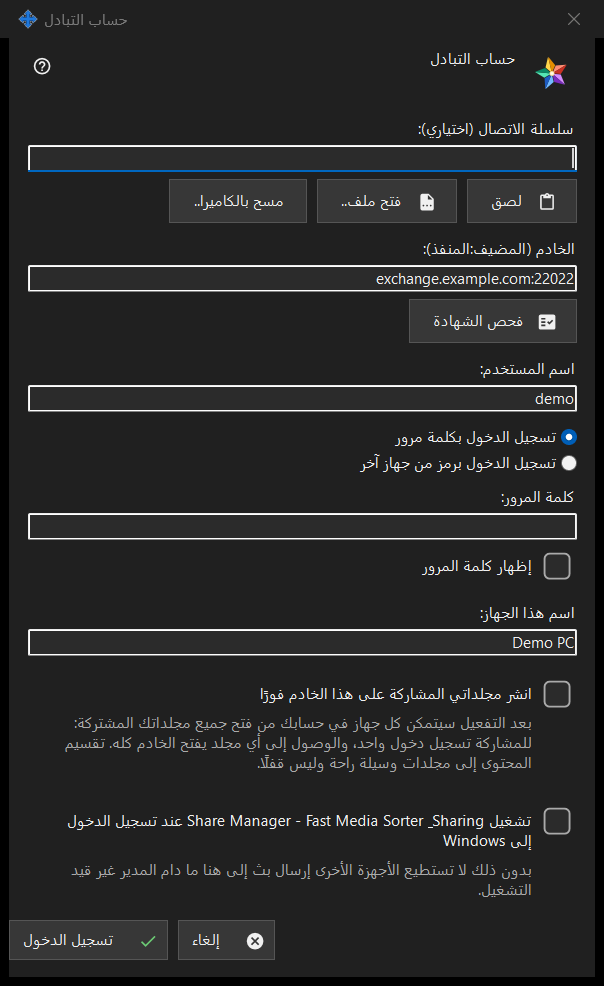

حساب التبادل
الغرض من هذه النافذة
يسجّل دخول هذا الكمبيوتر بوصفه جهازًا تابعًا لحساب على Media Exchange Server. تُفتح النافذة من الزر تسجيل الدخول.. في صفحة حساب التبادل ضمن إعدادات Share Manager، ومن الزر النشر عبر خادم تبادل.. الذي يفتحها وخيار النشر محدَّد مسبقًا.


بهذا الترتيب
- اختياريًا، الصق سلسلة اتصال أو افتحها أو امسحها ضوئيًا؛ فهي تملأ الخادم واسم المستخدم.
- اضغط فحص الشهادة، وما لم يكن النظام يثق بها أو تحملها السلسلة، فقارن البصمة ببصمة المشغّل ثم اضغط الوثوق بهذه الشهادة.
- أدخل اسم المستخدم وكلمة المرور أو رمز الاقتران.
- اضبط اسم الجهاز والخيارات.
- اضغط تسجيل الدخول.
عناصر النافذة
سلسلة الاتصال
يقبل الحقل سلسلة الاتصال (اختياري) سلسلة تلصقها بالزر لصق، أو تقرؤها بالزر مسح بالكاميرا.. أو تحمّلها من ملف .fmsexch أو من صورة رمز QR بالزر فتح ملف.. وهي تملأ الخادم واسم المستخدم فقط؛ ولا يتصل شيء إلى أن تضغط تسجيل الدخول. السلسلة التي تحمل بصمة تثبّت تلك الشهادة، فلا حاجة إلى مقارنة يدوية. والسلسلة التي تحمل دعوة تحوّل النافذة إلى التسجيل. أما السلسلة غير الصالحة فيُرفض استخدامها برسالة من سطر واحد.
الخادم والشهادة
يتصل الزر فحص الشهادة بالخادم المكتوب في الحقل الخادم (المضيف:المنفذ) ويعرض بصمة شهادة الخادم. إن كان النظام يثق بالشهادة فلا حاجة إلى تثبيتها. وإلا فقارن البصمة بتلك التي أعطاك إياها مشغّل الخادم ثم اضغط الوثوق بهذه الشهادة؛ هذا الزر وحده يقبل شهادة لا يعرفها النظام. وتغيير نص الخادم يُلغي نتيجة الفحص السابق. ولا يفعل Enter شيئًا ما دامت لا توجد شهادة موثوقة، فلا تذهب كلمة مرور إلى خادم لم يتحقق منه أحد.
اسم المستخدم وكلمة المرور ورمز الاقتران
أدخل اسم المستخدم ثم اختر تسجيل الدخول بكلمة مرور (كلمة المرور، مع إظهار كلمة المرور) أو تسجيل الدخول برمز من جهاز آخر (رمز الاقتران، ويصدره جهاز آخر تابع للحساب نفسه). يُمسح الحقل لحظة إرسال قيمته، أيًّا كانت النتيجة؛ ولا يحتفظ الجهاز إلا برمز وصول، ولا يحتفظ بكلمة المرور أبدًا.
التسجيل بدعوة
حين تحمل السلسلة دعوة يحل التسجيل محل خياري تسجيل الدخول: يضبط الحقلان كلمة مرور الحساب وكلمة المرور مرة أخرى كلمة المرور الجديدة، ويجب أن تستوفي السياسة المعروضة (10 أحرف على الأقل مع حرف لاتيني كبير وآخر صغير ورقم)، ويصبح نص الزر إنشاء الحساب.
اسم الجهاز والخيارات
يبدأ الحقل اسم هذا الجهاز (حتى 64 حرفًا) باسم الكمبيوتر. والخيار انشر مجلداتي المشاركة على هذا الخادم فورًا غير مفعّل إلا إذا جئت عبر النشر عبر خادم تبادل..؛ وعند تفعيله يستطيع كل جهاز في حسابك فتح جميع مجلداتك المشاركة، لأن المشاركة لها اسم دخول واحد. ويشغّل الخيار الأخير Share Manager عند تسجيل دخولك إلى Windows (معطّل افتراضيًا)، لتتمكن الأجهزة الأخرى من البث إلى هذا الكمبيوتر.
خادم واحد في كل مرة
ينتمي الجهاز إلى خادم واحد. وعند تسجيل الدخول إلى خادم آخر يُسأل هل تغادر الخادم الحالي، ويتوقف النشر على الخادم القديم. وبعد فشل الاتصال يفتح الزر Why doesn't it connect?.. اختبار الاتصال.